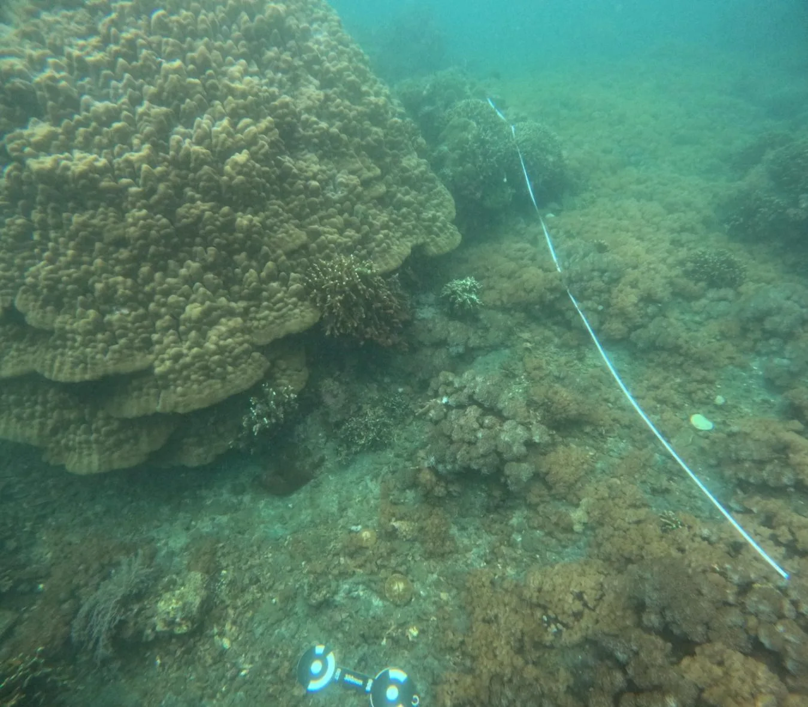

动机
AquaFlow 在大规模水下数据上微调 3D vision foundation model，用于鲁棒位姿和 pointmap 估计；结合介质引导的增量 Gaussian 初始化，以及带物理光学补偿的混合场景表示，并在 62 条水下轨迹上进行评估。
同时覆盖 Geometry Foundation Models、流式状态估计和水下退化重建，是本轮最贴近可靠几何主线的系统工作。
把 foundation model 几何先验、流式建图和水下成像补偿结合起来，直接处理恶劣介质中的可靠跟踪与重建。
当前为旧数据兼容显示；下一次任务会优先写入结构化海报字段。
AquaFlow 在大规模水下数据上微调 3D vision foundation model，用于鲁棒位姿和 pointmap 估计；结合介质引导的增量 Gaussian 初始化，以及带物理光学补偿的混合场景表示，并在 62 条水下轨迹上进行评估。
把 foundation model 几何先验、流式建图和水下成像补偿结合起来，直接处理恶劣介质中的可靠跟踪与重建。
同时覆盖 Geometry Foundation Models、流式状态估计和水下退化重建，是本轮最贴近可靠几何主线的系统工作。
当前记录未提供结构化局限，暂不替论文补写结论。
Geometry Foundation Models / 3D Foundation Models
AquaFlow 在大规模水下数据上微调 3D vision foundation model，用于鲁棒位姿和 pointmap 估计；结合介质引导的增量 Gaussian 初始化，以及带物理光学补偿的混合场景表示，并在 62 条水下轨迹上进行评估。
Recent monocular 3D Gaussian Splatting (3DGS) streaming reconstruction methods have achieved impressive performance by balancing reconstruction quality and efficiency. However, extending these frameworks to underwater scenes remains challenging due to severe visual degradation, such as light attenuation and scattering, which degrades camera pose tracking and distorts scene geometry. To address these challenges, we propose AquaFlow, a monocular Gaussian Splatting streaming reconstruction framework for efficient and high-fidelity underwater reconstruction. Specifically, AquaFlow fine-tunes a 3D vision foundation model on large-scale underwater data for robust pose and pointmap estimation, and introduces a medium-guided incremental Gaussian initialization strategy for streaming mapping. Furthermore, we develop a streaming-compatible hybrid scene representation that integrates structured, distance-conditioned neural Gaussians with a physics-inspired optical model to compensate for underwater image formation effects, enabling accurate scene reconstruction. We evaluate AquaFlow on a comprehensive dataset of 62 diverse underwater trajectories, collected from both public benchmarks and in-the-wild web videos across various scales. Extensive experiments demonstrate that AquaFlow achieves state-of-the-art tracking and rendering performance, reducing average localization error by 13.2% and improving PSNR by 4.74 dB compared to WaterSplat-SLAM.


{kind=link}